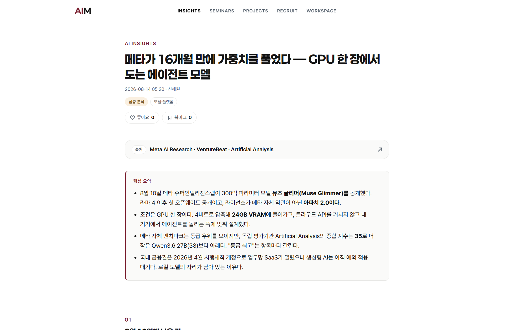
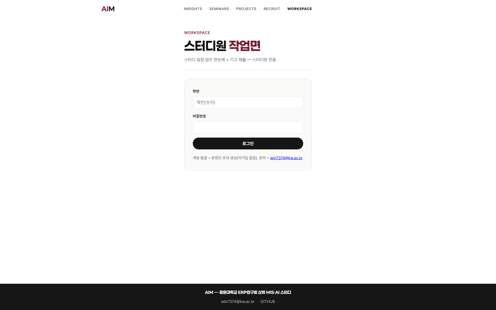
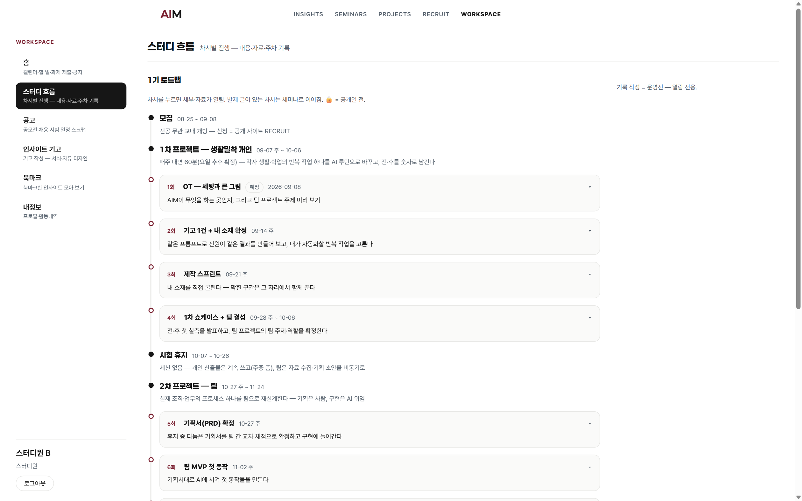

AIM 1기 OT
세팅과 큰 그림
소개
안내
실습
공개
설문
진도 없음 · 환경 세팅과 방향 정렬이 오늘의 범위 · 60분

오늘 로그인할 곳 = AIM 허브 워크스페이스
오늘 = 5파트 60분 · 진도 없음
파트별 대표 아이콘 = 각 파트 디바이더에서 재등장 · 오늘의 범위 = 세팅과 방향 정렬
이 파트에서 얻는 것 = 시장 기준과 스터디의 최종 목표 한 줄
창설 이유 = 시장 기준과 교육 과정의 간극
AIM = 광운대 ERP연구회 산하 MIS×AI 스터디 · 2026년 2학기 1기 개설
AI 활용 연구IT와 가장 가까운 전공에서 활용 방식을 직접 검증
시장의 평가 대상 = 시키는 방식과 검수
사용 여부는 변별 항목이 아님 · 대표 수치 3건 ①②③
격차의 원인 = 도구가 아니라 시키는 방식
같은 과제(경영정보 팀과제 발표자료 준비)를 두 방식으로 AI에 요청한 결과 비교 · 전원 챗봇 경험자
질문 한 줄만 입력
뼈대만 있는 일반 목차. 과목·분량·형식 미반영이라 다시 시키는 왕복 반복.
브리프 4칸을 채워 입력
목표 = 10분 발표 골격
조건 = 출처 필수 · 표 1개
형식 = 슬라이드 개요 8장
같은 도구·같은 시간에 조건이 반영된 제출용 초안.
최종 목표 = 증명 가능한 일상 활용자
위임 = 조건을 붙여 AI에 작업을 맡기고 결과를 사람이 검수하는 방식 · 4단 순서로 도달
일상 활용자전·후 수치와 동작하는 결과물로 증명
학기 = 개인 4주 + 팀 5주 · 시험 2주 전 중지
주 1회 대면 60분 고정 · 요일 추후 확정 · 구간 길이 = 실제 주 수 비율
1차 개인 4주
각자 생활·학업의 반복 작업 하나를 AI 루틴으로 교체하고 전·후를 숫자로 기록
차시 1 ~ 4시험기간
세션 없음. 개인 산출물은 계속 사용, 팀은 자료 수집을 비동기로
세션 0회2차 팀 5주
실재 조직·업무의 프로세스 하나를 재설계. 기획은 사람, 구현은 AI
차시 5 ~ 9시연 = 위임으로 도달한 수준 확인
따라 만들기는 오늘 범위 아님 · 확인 대상 = 사람이 검수한 지점
라이브 시연 화면
이 허브 사이트의 기획·검수 지점을 실시간으로 열어 확인. 촬영본 도착 시 이 자리에 교체.
폴백 = 현장 라이브 접속
이 사이트 = 같은 방식의 결과물
기획·검수는 사람, 구현은 AI. 오늘 보는 화면 전부가 그 결과.
오늘 범위 = 도달 수준 확인
제작 실습은 차시 3. 오늘은 어디까지 위임 가능한지만 확인.
확인 지점 = 사람이 손댄 곳
구조 결정·사실 검수·카피 판정 3곳. 나머지는 위임 구간.
이 파트에서 얻는 것 = 로그인 1회와 한 학기 동안 쓸 화면 위치
허브 = 보이는 곳 + 내는 곳
허브 = 스터디의 자료·일정·제출이 모이는 사이트 · 주소 1개, 로그인 여부로 화면이 갈림
공개면 = 보이는 곳
외부 열람용. 스터디 결과가 쌓이는 표면.
읽기 전용. 지원서에 링크로 제출 가능한 기록이 남는 자리.
워크스페이스 = 내는 곳
스터디원 작업면. 오늘 로그인할 대상.
일정 확인·과제 제출·기고 작성. 탭 5종이 한 학기 내내 고정.
인사이트 = 자동 주 3회 + 멤버 기고 주 1건
읽는 면(목록·상세)과 쓰는 면(기고)이 같은 데이터를 공유 · 기고 시작 = 차시 2

목록 = 시리즈 필터 · 미열람 배지 · 좋아요·북마크 수

상세 = 출처 링크 · 「SO WHAT」 마무리 절
자동 발행 = 주 3회
트렌드 브리핑과 인사이트가 정해진 요일에 게재.
멤버 기고 = 주 1건
워크스페이스 기고 탭에서 작성. 과제 항목에 포함.
로그인 = 학번 · 초기 비밀번호 000000
계정은 운영진이 사전 생성 · 로그인 후 첫 화면 = 월 캘린더와 다가오는 업무

입구 = 공개 헤더의 WORKSPACE 링크
아이디 = 학번
이메일 주소 대신 학번을 그대로 입력.
초기 비밀번호 = 000000
0 여섯 개. 전원 동일하게 발급.
변경 = 내정보 탭
첫 로그인 직후 내정보에서 비밀번호 변경.
로드맵 탭 = 학기 구조의 상세판
앞 장의 타임라인을 차시 단위로 펼친 화면 · 갱신 = 운영진, 열람 = 전원

차시 클릭 = 그 회차의 주제·완료 조건 펼침
회차 주제·배우는 것·세부 항목. 자료와 본문은 공개일에 해금.
운영진이 등록, 등록마다 "왜 유효한가" 한 줄 필수. 마감은 자동으로 흐림 처리.
과제 마감·차시 날짜·공고 접수마감이 한 달력에 모임.
승인 = 형식 확인만 · 내용 검열 없음
제출부터 게재까지 4단 · 순서대로 공개 버튼으로 확인
이 파트에서 얻는 것 = 오늘의 판정 1(결과 차이 확인)이 발생하는 구간
설치 점검 = 이 시간에 전원 완료
항목을 눌러 체크 · 미완료 항목은 옆 사람과 확인 후 이 자리에서 해결
함정 = 학교 계정 제한
기관 계정은 외부 AI 도구 접속이 차단되는 사례가 있음. 차단 시 개인 계정으로 전환.
통과 = 설치 완료가 아니라 프롬프트 1개 실행
계정 생성까지만 한 상태 = 실습 참여 불가 · 판정 기준은 화면에 나온 결과 1건
계정 생성만 완료
미통과. 도구가 실제로 응답하는지 확인되지 않음.
화면 진입만 완료
미통과. 입력 권한·지역 제한이 남아 있을 수 있음.
프롬프트 1개 입력 후 결과 확인
통과. 이 상태에서 다음 장 실습 A로 진행.
도구 방침 = 무료 표준 · 유료는 자유
스터디가 다루는 대상과 다루지 않는 대상의 경계 · 도구명 추천 없음
도구 등급 비교
모델 성능 순위, 유료 요금제 간 차이, 최신 출시 추적.
등급 차이보다 지시 품질의 차이가 결과를 더 크게 가른다. 앞 장 비교가 근거.
활용 상황 판단
어떤 작업을 어떤 조건으로 위임할지, 결과를 어디서 검수할지.
도구가 바뀌어도 남는 역량. 학기 전 구간의 평가 대상.
실습 A = 평소처럼 한 줄 질문
공통 과제 = 경영정보 팀과제 · 10분 발표자료 준비 · 소요 3분
본인이 쓰던 챗봇에 이 한 줄만 입력. 추가 설명 없이 1회 실행.
닫지 말 것. 다음 장 실습 B 결과와 나란히 비교.
실습 A 입력·결과 화면
한 줄 질문을 입력한 실제 화면. 촬영본 도착 시 이 자리에 교체.
현장에서는 각자 화면이 이 자리를 대신함
실습 B = 같은 과제를 브리프 4블록으로
과제·도구·시간 동일, 입력만 교체 · 4칸을 채운 뒤 1회 실행 · 소요 3분
과목·상황·수신자. 누가 왜 보는가를 한 줄.
끝났을 때 손에 남을 것. 분량·시간 명시.
지켜야 할 제약. 검수 기준이 되는 칸.
받고 싶은 출력 모양. 목록·표·초안 중 하나로 지정.
실습 B 입력·결과 화면
4블록을 채워 입력한 실제 화면. 촬영본 도착 시 이 자리에 교체.
③ 판정 = 두 결과를 다음 장에서 대조
판정 = 그대로 제출할 수 있는 쪽
① 입력 = 같은 과제 · ② 결과 = 두 산출물 · ③ 판정 = 추가 작업 없이 낼 수 있는가
한 줄 질문
분량 지정 = 없음
출처 = 없음
다시 시킨 횟수 = 다수
제출 전 사람이 다시 쓰는 구간이 남음.
브리프 4블록
분량 지정 = 8장
출처 = 표기됨
다시 시킨 횟수 = 0~1
검수만 거치면 제출 가능한 초안.
이 파트에서 얻는 것 = 소재 후보 1개와 팀 주제의 범위
개인 소재 = 본인이 실사용자인 반복 작업
1기 후보 5종 · 목록에서 고르는 방식이 아니라 기준을 보여주는 예시
공지·강의계획서를 넣으면 주간 할 일로 정리. 주 3회 이상 반복.
틀린 문항 기록을 근거로 유사 문항·해설을 다시 생성.
주제·분량·형식을 조건으로 넘기고 초안 구조를 받는 반복 작업.
관심 조건에 맞는 공고만 모아 마감일 기준으로 정리.
조사·요약까지 위임하고 판단은 본인이. 검수 지점이 명확한 사례.
소재 카드 = 4문항 전부 기입 시 통과
제출 = 차시 2 · 오늘은 후보 1개를 머릿속에 정하는 것까지
| NO | 문항 | 기입 기준 | 기입 예시 |
|---|---|---|---|
| 01 | 반복 작업 = 무엇을 몇 번 | 작업 이름과 주당 횟수 | 주 3회 강의 노트 정리 |
| 02 | 회당 소요 = 분 단위 | 측정값. 추정이면 근거 한 줄 | 40분 |
| 03 | AI 위임 후 확인 지점 | 사람이 반드시 볼 항목 | 출처·수치 대조 |
| 04 | 결과물의 수취인·용처 | 누가 어디에 쓰는가 | 본인 · 시험 대비 복습 |
팀 주제 = 기획은 사람 · 구현은 AI
2차 프로젝트(10-27 주 ~ 11-24) 범위 · 팀 결성 = 차시 4 · 무대 2종 중 택 1
조직 실운영
동아리·학생회·팀 프로젝트에서 실제로 도는 반복 업무 하나.
운영자가 계속 쓰는 도구. 사용 기록이 증거.
프로세스 재설계
기존 업무 절차를 다시 설계하고 그 설계대로 동작물을 만드는 방향.
기획서(PRD)와 동작하는 MVP 한 벌.
다음 4주 = 차시별 완료 조건 하나씩
회차마다 판정 항목 1개 · 완료 조건 미충족 시 다음 회차에 이월
오늘세팅 완료 · 결과 차이 확인 · 시작 설문
증명의 재료 = 시작 시점의 상태와 학기말 상태의 차이
시작 설문 = 학기말 비교의 기준점
지금 상태를 숫자로 남기는 절차 · 평가 아님 · 이 자리에서 제출
설문 QR 코드
폼 주소 확정 시 이 자리에 QR 게재. 현장 대체 = 워크스페이스 공지 링크.
제출 확인 = 운영진이 현장에서 인원 대조
문항 = 5개
현재 사용 상태를 묻는 문항. 정답 없음.
소요 = 3분
이 시간 안에 전원 제출. 미제출자는 종료 전 확인.
성격 = 평가 아님
점수·등급 없음. 학기말에 같은 문항을 재실시해 전·후만 대조.
다음 시간 = 기고 1건과 소재 확정
이번 학기의 축 = 시키는 방식과 검수 · 도구 등급이 아님
다음 회차 = 09-14 주 · 요일 확정 시 워크스페이스 공지
출처 = 본문 각주 ①②③ 일괄
인용 수치 3건의 원문 · 본문 장에는 각주 번호만 표기
| 각주 | 출처 | 인용 수치 | 확인일 |
|---|---|---|---|
| ① | 한국경제 2026 채용 트렌드 조사 | 채용에서 AI 활용 역량 우대 78% | 2026-08-16 |
| ② | Microsoft Work Trend Index 2026 | 중요 역량 1위 = AI 결과 검수 50% | 2026-08-16 |
| ③ | futurefactors.ai | 프롬프트 직군 공고 전년 대비 -40% | 2026-08-16 |